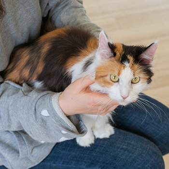
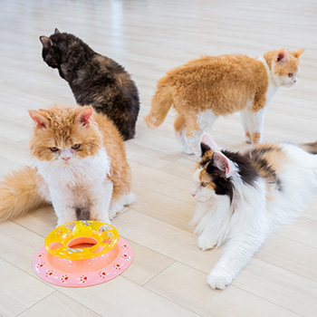

猫と癒しの空間
時間がゆっくり流れる
都会のオアシス
自由に暮らす猫たちとのんびり過ごす
JR仙台駅から徒歩7分、楽しみながらくつろげる猫カフェ「Ring's Garden」。
個性豊かなかわいい猫ちゃんたちが、自然体で自由にのんびり過ごしています。
おひとり様やカップル、ご友人、お子様連れの方など大歓迎です！多種多様な猫ちゃんがご来店をお待ちしています。

時間帯によって違う表情が見られます
猫ちゃんは1日を通してさまざまな表情があります。
元気に遊びまわる時間帯は、開店直後から午後2時あたりまでです。
その後、ゆったりとお昼寝をします。ディナータイムは夜6時。このあたりから、また元気に遊びはじめます。

お知らせ
- 2019/05/20
- 5月30日はシェリーちゃん5歳の誕生日です！ぜひ会いに来てくださいね
- 2019/04/23
- ゴールデンウィーク期間中の営業時間は11時〜19時です
- 2018/05/08
- 新しい仲間が加わりました！詳しくはキャスト紹介をご覧ください